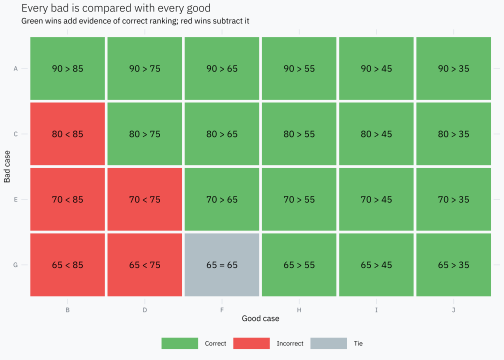
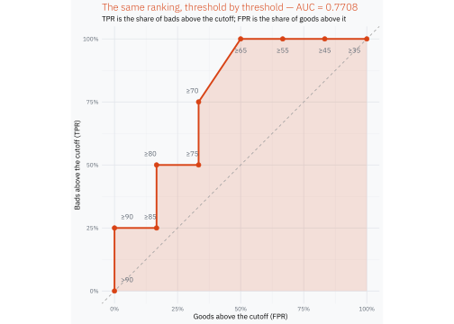

possible bad-good pairs. Those 24 comparisons are all we need.
What does Gini actually count?
Take one bad and compare its score with each of the six goods. Because a higher score means more risk, a pair is:
correct when the bad has the higher score;
incorrect when the good has the higher score;
a tie when both have the same score.
bads<-scores|>filter(default==1)|>transmute(bad_case =case, bad_score =score)goods<-scores|>filter(default==0)|>transmute(good_case =case, good_score =score)pairs<-tidyr::crossing(bads, goods)|>mutate( result =case_when(bad_score>good_score~"Correct",bad_score<good_score~"Incorrect",TRUE~"Tie"),# Keep the comparison visible inside every cell of the pair matrix. comparison =paste(bad_score, c("=" , ">", "<")[match(result,c("Tie", "Correct", "Incorrect"))], good_score), bad_case =factor(bad_case, levels =rev(bads$bad_case)), good_case =factor(good_case, levels =goods$good_case))
ggplot(pairs, aes(good_case, bad_case))+geom_tile(aes(fill =result), color ="#F8F9FA", linewidth =1.2)+geom_text(aes(label =comparison), size =3.2)+scale_fill_manual( values =c( Correct ="#66BB6A", Incorrect ="#EF5350", Tie ="#B0BEC5"))+labs( title ="Every bad is compared with every good", subtitle ="Green wins add evidence of correct ranking; red wins subtract it", x ="Good case", y ="Bad case", fill =NULL)+theme(panel.grid =element_blank())

Now count the three possible results for each bad.
Let \(C\) be the number of correct pairs, \(I\) the incorrect pairs, \(E\) the ties, and \(N=C+I+E\). A direct definition of Gini is
\[
Gini = \frac{C-I}{N}.
\]
For this score,
\[
Gini = \frac{18-5}{24} = 0.5417.
\]
Gini measures how much correct ordering dominates incorrect ordering. A Gini near 1 means that almost every bad-good pair is correctly ordered. A Gini of 0 means that, on average, correct and incorrect orderings balance out.
Notice that ties contribute zero to the numerator. They are neither a win nor a loss, but they still belong to the 24 possible comparisons in the denominator.
The same pairs give us AUC
Keep exactly the same pairs and change only the scoring rule:
a correct pair scores 1;
an incorrect pair scores 0;
a tie scores 0.5.
Then AUC is the average score across the 24 pairs:
\[
AUC = \frac{C+\frac{1}{2}E}{N}.
\]
In our example,
\[
AUC = \frac{18+0.5}{24} = 0.7708.
\]
AUC is the proportion of bad-good pairs correctly ordered, counting a tie as half a correct ordering.
This interpretation does not need a threshold. It asks only whether a randomly chosen bad tends to receive a higher score than a randomly chosen good.
Why Gini = 2 × AUC − 1
The relationship now follows from the two counting rules. Because every pair is correct, incorrect or tied,
\[
I=N-C-E.
\]
Substitute that identity into the definition of Gini:
Gini is simply AUC rescaled so that random ordering is 0 and perfect ordering is 1.
Where does the ROC curve come from?
Only now do we need thresholds. Start above the largest score, then lower the cutoff one observed score at a time. At each cutoff, count how many bads and goods are above it.
The traditional names are true positive rate (TPR) for the proportion of bads above the cutoff and false positive rate (FPR) for the proportion of goods above it. The ROC curve simply plots TPR against FPR while the cutoff moves.
roc_plot<-ggplot(roc, aes(good_rate, bad_rate))+geom_polygon( data =roc_area,aes(fpr, tpr), fill =gini_orange, alpha =0.14, inherit.aes =FALSE)+geom_abline(slope =1, intercept =0, color ="#9E9E9E", linetype =2)+geom_path(linewidth =0.9)+geom_point(size =2.2)+geom_text(aes( x =label_x+if_else(goods_above%in%c(1L, 2L), -0.025, 0), y =label_y, label =cut, hjust =label_hjust), color ="#5F6873", size =2.7)+scale_x_continuous( breaks =seq(0, 1, 0.25), labels =scales::label_percent())+scale_y_continuous( breaks =seq(0, 1, 0.25), labels =scales::label_percent())+coord_equal()+labs( title =sprintf("The same ranking, threshold by threshold — AUC = %.4f",roc_auc), subtitle ="TPR is the share of bads above the cutoff; FPR is the share of goods above it", x ="Goods above the cutoff (FPR)", y ="Bads above the cutoff (TPR)")+theme( plot.title =element_text(color =gini_orange))roc_plot

Most of the curve looks like a staircase: admitting a bad moves it up and admitting a good moves it right. At score 65 one bad and one good enter together, so the curve has a short diagonal segment. Its trapezoidal area counts that tie as half a correct pair, exactly as the pair definition did.
The result is not a second AUC calculation with a different meaning:
\[
\text{area under the ROC curve}=0.7708
=\frac{18+0.5}{24}.
\]
Takeaway
Gini, AUC and the ROC curve are not three independent ideas:
the ranking of bad-good pairs is the fundamental idea;
AUC summarizes that ranking, with half credit for ties;
Gini rescales AUC around random ordering;
the ROC curve shows what happens as the cutoff moves through the same ranking.
Once the 24 pairs are visible, the formula \(Gini=2AUC-1\) stops being something to memorize. It is just the same pair count on a different scale.